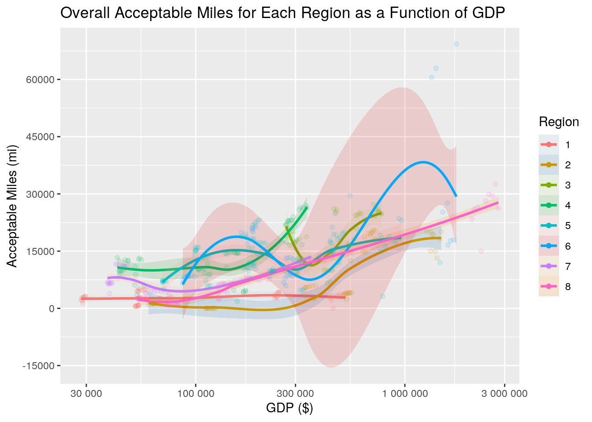

NAME: Ayanna Fisher EID: adf2353 DUE: 04/04/2021
INTRODUCTION
For this project I wanted to see if there was a relationship between the condition of roads/infrastructure of each state and their corresponding GDP status for each year.
The infrastructure data frame used in this assignment comes from the U.S. Bureau of Transportation Statistics –> https://www.bts.gov/road-condition . It originally had 5 columns, listing the state, international roughness index, class, year, and total miles. I expect to tidy this up by taking out the IRI column and use pivot wider on the class column.
The GDP dataset was sourced from the U.S. Department of Commerce –> https://apps.bea.gov/iTable/iTable.cfm?reqid=70&step=1#reqid=70&step=1 . This df has 31 variables and 484 observations. The variables it contains include, GeoName (states), years (1997-2019), region, etc. I will likely use pivot longer to combine all of the years into 1 column and delete a few columns that won’t be utilized for this project for this project.
1. TIDYING
library(tidyverse)
library(tidyr)
library(dplyr)
library(kableExtra)
library(ggplot2)
# GDP by STATE df (1997-2019)
stGDP <- read_csv("SAGDP1__ALL_AREAS_1997_2019.csv")
# TIDYING GDP DF
step1 <- stGDP %>% select(2:3, 7:8, 23:31)
step2 <- step1 %>% pivot_longer(c("2011":"2019"), names_to = "Year") %>%
separate(Year, into = "Year", convert = T)
step3 <- step2 %>% select(1:2, 5, 3, 6) %>% na.omit() %>% pivot_wider(names_from = "Description",
values_from = "value")
final_GDPdf <- step3 %>% rename(RealGDP = 4, CQI = 5, NominalGDP = 6,
Subsidies = 11) %>% select(1:6, 11) %>% mutate(Region = as.character(Region),
Year = as.character((Year)))
# tidy GDP df
final_GDPdf %>% head(5) %>% kbl(caption = "**Tidy GDP**") %>%
kable_styling(bootstrap_options = c("striped", "hover", "condensed",
"responsive"))| GeoName | Region | Year | RealGDP | CQI | NominalGDP | Subsidies |
|---|---|---|---|---|---|---|
| Alabama | 5 | 2011 | 185666.9 | 99.525 | 181929.9 | -509.6 |
| Alabama | 5 | 2012 | 186553.9 | 100.000 | 186553.9 | -484.7 |
| Alabama | 5 | 2013 | 188814.2 | 101.212 | 192166.5 | -457.1 |
| Alabama | 5 | 2014 | 187568.0 | 100.544 | 195037.7 | -466.9 |
| Alabama | 5 | 2015 | 189428.8 | 101.541 | 200197.5 | -440.7 |
# Road conditions / Infrastructure df (2011-2019)
allRC_ <- read_csv("allRC_.csv")
# TIDYING ROAD CONDITIONS DF
st1 <- allRC_ %>% relocate(1, 4, 2, 5) %>% select(1:4)
final_RCdf <- st1 %>% pivot_wider(names_from = "Class", values_from = "Miles") %>%
rename(AcceptableMiles = "Acceptable (miles)", AcceptablePercent = "Percent Acceptable",
TotalMiles = "Total (miles)") %>% mutate(Year = as.character(Year))
# tidy infrastructure df
final_RCdf %>% head(5) %>% kbl(caption = "**Tidy Infrastructure**") %>%
kable_styling(bootstrap_options = c("striped", "hover", "condensed",
"responsive"))| State | Year | AcceptableMiles | AcceptablePercent | TotalMiles |
|---|---|---|---|---|
| Alabama | 2019 | 23249.922 | 0.8870157 | 26211.399 |
| Alaska | 2019 | 2811.892 | 0.8296608 | 3389.207 |
| Arizona | 2019 | 12113.409 | 0.7913743 | 15306.800 |
| Arkansas | 2019 | 6050.767 | 0.9332849 | 6483.301 |
| California | 2019 | 26223.917 | 0.6484012 | 40443.969 |
Since the GDP data frame was the larger one of the 2 I’m working on, I decided to tidy that one first. The first thing that I needed to do was delete the columns that I was sure I wouldn’t use. Because the road condition df only dates back to 2011, I deleted columns 9 through 22, which corresponded with years 1997 to 2010. In total, I ended up deleting 18 columns for the first step. I retained columns that would be crucial when combined later on, like States, region, years 2011-2019, and description (the type of GDP). The next thing on the agenda was to use pivot_longer to put all of the years from 2011 to 2019 into one column. Step 3 manipulated the data by getting rid of rows that contained NA values, deleting the column that contained the “X” character that we ha previously separated from the years, and re-order the columns. This was also the step where I first used pivot_wider, to alter the Description column so that each GDP variable (Real, Nominal, etc) had its own column. Lastly was the step to renaming a few essential columns to make it easier to code later, with the function rename(). Next, I had to tidy the road conditions dataset. Firstly, I organized the variables using relocate(), then selected the variables needed for this project (state, year, class, miles). This was a relatively long df so I used to the pivot_wider on the Class variable. This would allow the data to have 3 separate columns for Acceptable Miles, Percentage, and Total Miles.
2. JOINING
# inner_join() ->> combines based on common ID
comb1 <- final_RCdf %>% inner_join(final_GDPdf, by = c(State = "GeoName",
"Year"))
final_combined <- comb1 %>% relocate(1, 6, 2:5, 7, 9, 8, 10)
final_combined %>% head() %>% kbl(caption = "**Joined GDP and Infrastructure Dataset**") %>%
kable_styling(bootstrap_options = c("striped", "hover", "condensed",
"responsive"))| State | Region | Year | AcceptableMiles | AcceptablePercent | TotalMiles | RealGDP | NominalGDP | CQI | Subsidies |
|---|---|---|---|---|---|---|---|---|---|
| Alabama | 5 | 2019 | 23249.922 | 0.8870157 | 26211.399 | 200829.4 | 228142.6 | 107.652 | -593.7 |
| Alaska | 8 | 2019 | 2811.892 | 0.8296608 | 3389.207 | 53255.2 | 54385.6 | 92.269 | -113.9 |
| Arizona | 6 | 2019 | 12113.409 | 0.7913743 | 15306.800 | 323597.6 | 370119.1 | 120.715 | -809.8 |
| Arkansas | 5 | 2019 | 6050.767 | 0.9332849 | 6483.301 | 117447.1 | 130954.1 | 109.031 | -1223.6 |
| California | 8 | 2019 | 26223.917 | 0.6484012 | 40443.969 | 2800505.4 | 3132800.6 | 130.615 | -9110.5 |
| Colorado | 7 | 2019 | 12655.845 | 0.7777576 | 16272.224 | 356280.2 | 392986.0 | 130.222 | -1213.8 |
The function inner_join was used to merge the final GDP df and the final infrastructure df. Inner_join was implemented instead of other functions like full/right/left_join because it combines via common ID (in this case State = GeoName and Year) and deletes nonmatches. Then I manipulated the combined df with relocate() to move region next to state.
3. WRANGLING PT1: DPLYR
# lag() gives percent increase from previous row
mut1 <- final_combined %>% arrange(State, Year) %>% mutate(GDPpercentChange = (RealGDP -
lag(RealGDP))/lag(RealGDP))
# case_when() creates categorical varia from numeric
final_df <- mut1 %>% mutate(letterGrade = case_when(AcceptablePercent >
0.9 ~ "A", AcceptablePercent < 0.9 & AcceptablePercent >=
0.8 ~ "B", AcceptablePercent < 0.8 & AcceptablePercent >=
0.7 ~ "C", AcceptablePercent < 0.7 & AcceptablePercent >=
0.6 ~ "D", AcceptablePercent < 0.6 ~ "F")) %>% select(1:4,
6, 5, 12, 7:8, 10:11)
final_df %>% head(5) %>% kbl(caption = "**Final DF With 2 New Variables**") %>%
kable_styling(bootstrap_options = c("striped", "hover", "condensed",
"responsive"))| State | Region | Year | AcceptableMiles | TotalMiles | AcceptablePercent | letterGrade | RealGDP | NominalGDP | Subsidies | GDPpercentChange |
|---|---|---|---|---|---|---|---|---|---|---|
| Alabama | 5 | 2011 | 20988 | 22943 | 0.9147888 | A | 185666.9 | 181929.9 | -509.6 | NA |
| Alabama | 5 | 2012 | 15893 | 17235 | 0.9221352 | A | 186553.9 | 186553.9 | -484.7 | 0.0047774 |
| Alabama | 5 | 2013 | 18307 | 20545 | 0.8910684 | B | 188814.2 | 192166.5 | -457.1 | 0.0121161 |
| Alabama | 5 | 2014 | 21856 | 24254 | 0.9011297 | A | 187568.0 | 195037.7 | -466.9 | -0.0066001 |
| Alabama | 5 | 2015 | 11276 | 11554 | 0.9759391 | A | 189428.8 | 200197.5 | -440.7 | 0.0099207 |
To create a percent change in time for Real GDP, the dplyr vector function, lag(), was used to manipulate and create a new variable named “GDPpercentChange”. The second new variable made was a letter grade variable that took the percentages of acceptable miles and converted them into the A-D and F; case_when was used for this part.
# average acceptable amount of miles from 2014 to 2019 when
# grouped by State state with top average
final_df %>% group_by(State) %>% filter(Year >= 2014) %>% summarize(mean_AccM = mean(AcceptableMiles,
na.rm = T), mean_pctM = mean(AcceptablePercent, na.rm = T)) %>%
arrange(desc(mean_pctM)) %>% head(1) %>% kbl(caption = "**State with Top Average Acceptable Miles**") %>%
kable_styling(bootstrap_options = c("striped", "hover", "condensed",
"responsive"))| State | mean_AccM | mean_pctM |
|---|---|---|
| Idaho | 4416.838 | 0.9592973 |
# state with bottom average
final_df %>% group_by(State) %>% filter(Year >= 2014) %>% summarize(mean_AccM = mean(AcceptableMiles,
na.rm = T), mean_pctM = mean(AcceptablePercent, na.rm = T)) %>%
arrange(mean_pctM) %>% head(2) %>% kbl(caption = "**State with Bottom Average Acceptable Miles**") %>%
kable_styling(bootstrap_options = c("striped", "hover", "condensed",
"responsive"))| State | mean_AccM | mean_pctM |
|---|---|---|
| District of Columbia | 27.39643 | 0.0615769 |
| Rhode Island | 732.86651 | 0.4710058 |
When grouped by State and only looking at years from 2014 to 2019, the State with the highest mean percentage of acceptable miles is Idaho, with a mean value of 95% or 4,416.84 miles, while the place with the lowest mean percentage of acceptable miles is Washington D.C. with and average of 27.39 acceptable miles (6.16%). Since D.C. isn’t technically a state, Rhode Island comes in first place as the state with a lowest value of 732.87 miles (or 47%).
# States with highest and lowest Real GDP in 2019
final_df %>% group_by(State) %>% filter(Year == 2019) %>% select(1:4,
7:8) %>% arrange(desc(RealGDP)) %>% head(3) %>% kbl(caption = "**States with Highest GDP in 2019**") %>%
kable_styling(bootstrap_options = c("striped", "hover", "condensed",
"responsive"))| State | Region | Year | AcceptableMiles | letterGrade | RealGDP |
|---|---|---|---|---|---|
| California | 8 | 2019 | 26223.92 | D | 2800505 |
| Texas | 6 | 2019 | 69296.62 | C | 1764357 |
| New York | 2 | 2019 | 20097.64 | C | 1490678 |
final_df %>% group_by(State) %>% filter(Year == 2019) %>% select(1:4,
7:8) %>% arrange(RealGDP) %>% head(3) %>% kbl(caption = "**States with Lowest GDP in 2019**") %>%
kable_styling(bootstrap_options = c("striped", "hover", "condensed",
"responsive"))| State | Region | Year | AcceptableMiles | letterGrade | RealGDP |
|---|---|---|---|---|---|
| Vermont | 1 | 2019 | 3164.933 | B | 29806.2 |
| Wyoming | 7 | 2019 | 6793.627 | A | 39214.0 |
| South Dakota | 4 | 2019 | 12497.290 | B | 47559.7 |
# States with highest and lowest Acceptable Miles in 2019
final_df %>% group_by(State) %>% filter(Year == 2019) %>% select(1:4,
7:8) %>% arrange(desc(AcceptableMiles, RealGDP)) %>% head(3) %>%
kbl(caption = "**States with Highest Acceptable Miles in 2019**") %>%
kable_styling(bootstrap_options = c("striped", "hover", "condensed",
"responsive"))| State | Region | Year | AcceptableMiles | letterGrade | RealGDP |
|---|---|---|---|---|---|
| Texas | 6 | 2019 | 69296.62 | C | 1764357.2 |
| Georgia | 5 | 2019 | 29499.46 | A | 547422.7 |
| Minnesota | 4 | 2019 | 26337.43 | B | 341041.4 |
final_df %>% group_by(State) %>% filter(Year == 2019) %>% select(1:4,
7:8) %>% arrange(AcceptableMiles, RealGDP) %>% head(3) %>%
kbl(caption = "**States with Lowest Acceptable Miles in 2019**") %>%
kable_styling(bootstrap_options = c("striped", "hover", "condensed",
"responsive"))| State | Region | Year | AcceptableMiles | letterGrade | RealGDP |
|---|---|---|---|---|---|
| District of Columbia | 2 | 2019 | 31.37858 | F | 123929.3 |
| Rhode Island | 1 | 2019 | 849.19907 | F | 53668.0 |
| Hawaii | 8 | 2019 | 889.48000 | F | 82471.4 |
The data displayed above may indicate that there is a moderately strong relationship between how much money a state has and its acceptable road conditions.
# Mean Real GDP for each region (2011-2019) and the mean
# acceptable miles (%)
final_df %>% group_by(Region) %>% summarize(meanGDP = mean(RealGDP,
na.rm = T), meanpctM = mean(AcceptablePercent, na.rm = T)) %>%
arrange(desc(meanGDP)) %>% kbl(caption = "**Mean GDP for Each Region in the U.S.**") %>%
kable_styling(bootstrap_options = "striped", full_width = F)| Region | meanGDP | meanpctM |
|---|---|---|
| 8 | 558101.8 | 0.7423472 |
| 6 | 531826.8 | 0.7965897 |
| 2 | 520362.3 | 0.6043135 |
| 3 | 472222.2 | 0.8196310 |
| 5 | 303902.9 | 0.8467925 |
| 4 | 159013.2 | 0.8776040 |
| 1 | 154117.5 | 0.6856085 |
| 7 | 120013.3 | 0.8745784 |
The region with the lowest mean Real GDP is region 8, of $558,101.8; also known as the Far West, this region has an average percentage of 74.23% acceptable miles. The region with the highest mean Real GDP is region 7, the Rocky Mountains, with an average percentage of 87.46% acceptable miles, it has a mean real GDP of $ 120,013.30.
3. WRANGLING PT2: SUMMARY STATISTICS
# mean, median, sd, n, quantile, min, max
final_df %>% select(4:6, 8:11) %>% summarize_all(mean, na.rm = T) %>%
kbl(caption = "**Mean Values**") %>% kable_styling(bootstrap_options = c("striped",
"hover", "condensed", "responsive"))| AcceptableMiles | TotalMiles | AcceptablePercent | RealGDP | NominalGDP | Subsidies | GDPpercentChange |
|---|---|---|---|---|---|---|
| 11484.96 | 14389.93 | 0.78759 | 338115.7 | 356419 | -1202.347 | 0.1890752 |
final_df %>% select(4:6, 8:11) %>% summarize_all(median, na.rm = T) %>%
kbl(caption = "**Median Values**") %>% kable_styling(bootstrap_options = c("striped",
"hover", "condensed", "responsive"))| AcceptableMiles | TotalMiles | AcceptablePercent | RealGDP | NominalGDP | Subsidies | GDPpercentChange |
|---|---|---|---|---|---|---|
| 10298 | 12451 | 0.8140805 | 193204.7 | 204454.7 | -833.6 | 0.0162134 |
final_df %>% select(4:6, 8:11) %>% summarize_all(n_distinct,
na.rm = T) %>% kbl(caption = "**Unique Values (n)**") %>%
kable_styling(bootstrap_options = c("striped", "hover", "condensed",
"responsive"))| AcceptableMiles | TotalMiles | AcceptablePercent | RealGDP | NominalGDP | Subsidies | GDPpercentChange |
|---|---|---|---|---|---|---|
| 455 | 450 | 458 | 459 | 459 | 454 | 458 |
final_df %>% select(4:6, 8:11) %>% summarize_all(quantile, na.rm = T) %>%
kbl(caption = "**Quantiles (0%, 25%, 50%, 75%, 100%)**") %>%
kable_styling(bootstrap_options = c("striped", "hover", "condensed",
"responsive"))| AcceptableMiles | TotalMiles | AcceptablePercent | RealGDP | NominalGDP | Subsidies | GDPpercentChange |
|---|---|---|---|---|---|---|
| 0.000 | 0.00 | 0.0315315 | 28367.9 | 28134.60 | -9110.50 | -0.9294062 |
| 4634.828 | 6324.00 | 0.7352503 | 81621.7 | 87639.45 | -1336.75 | 0.0057819 |
| 10298.000 | 12451.00 | 0.8140805 | 193204.7 | 204454.70 | -833.60 | 0.0162134 |
| 16792.000 | 20835.50 | 0.8944389 | 438981.5 | 441234.85 | -376.30 | 0.0295030 |
| 69296.615 | 88738.07 | 0.9954885 | 2800505.4 | 3132800.60 | -81.80 | 16.8023706 |
final_df %>% select(4:6, 8:11) %>% summarize_all(min, na.rm = T) %>%
kbl(caption = "**Minimum Values**") %>% kable_styling(bootstrap_options = c("striped",
"hover", "condensed", "responsive"))| AcceptableMiles | TotalMiles | AcceptablePercent | RealGDP | NominalGDP | Subsidies | GDPpercentChange |
|---|---|---|---|---|---|---|
| 0 | 0 | 0.0315315 | 28367.9 | 28134.6 | -9110.5 | -0.9294062 |
final_df %>% select(4:6, 8:11) %>% summarize_all(max, na.rm = T) %>%
kbl(caption = "**Maximum Values**") %>% kable_styling(bootstrap_options = c("striped",
"hover", "condensed", "responsive"))| AcceptableMiles | TotalMiles | AcceptablePercent | RealGDP | NominalGDP | Subsidies | GDPpercentChange |
|---|---|---|---|---|---|---|
| 69296.62 | 88738.07 | 0.9954885 | 2800505 | 3132801 | -81.8 | 16.80237 |
# group_by() 1 variable median values for each year
final_df %>% group_by(Year) %>% select(4:6, 8:11) %>% summarize_all(median,
na.rm = T) %>% arrange(desc(Year)) %>% kbl(caption = "**Median Values for each year (2011-2019)**") %>%
kable_styling(bootstrap_options = "striped", full_width = F)| Year | AcceptableMiles | TotalMiles | AcceptablePercent | RealGDP | NominalGDP | Subsidies | GDPpercentChange |
|---|---|---|---|---|---|---|---|
| 2019 | 11200.49 | 13024.44 | 0.8190058 | 214933.7 | 247543.8 | -1140.5 | 0.0160876 |
| 2018 | 10308.00 | 12764.00 | 0.8128666 | 209012.5 | 235286.9 | -891.0 | 0.0252173 |
| 2017 | 11055.00 | 12667.00 | 0.8155894 | 202644.5 | 223414.0 | -782.9 | 0.0153420 |
| 2016 | 10064.00 | 12571.00 | 0.8171199 | 196477.4 | 213584.6 | -851.6 | 0.0114175 |
| 2015 | 11276.00 | 12647.00 | 0.8345023 | 191864.2 | 202718.6 | -814.1 | 0.0263427 |
| 2014 | 11353.00 | 12664.00 | 0.8148526 | 186307.0 | 193546.4 | -798.1 | 0.0202864 |
| 2013 | 8384.00 | 9853.00 | 0.7938532 | 179499.1 | 182837.0 | -798.8 | 0.0092313 |
| 2012 | 10369.00 | 12050.00 | 0.8064304 | 176323.1 | 176323.1 | -795.8 | 0.0116124 |
| 2011 | 10171.00 | 11320.00 | 0.7984190 | 174202.7 | 170620.6 | -827.1 | -0.2537898 |
# group_by() 2 variables median values for 2011 and 2019,
# letters A and B
final_df %>% group_by(Year, letterGrade) %>% filter((Year ==
2011 | Year == 2019) & (letterGrade == "A" | letterGrade ==
"B")) %>% select(4:6, 8:11) %>% summarize_all(median, na.rm = T) %>%
arrange(desc(Year)) %>% kbl(caption = "Median Values of States rated A and B in 2011 and 2019") %>%
kable_styling(bootstrap_options = c("striped", "hover", "condensed",
"responsive"))| Year | letterGrade | AcceptableMiles | TotalMiles | AcceptablePercent | RealGDP | NominalGDP | Subsidies | GDPpercentChange |
|---|---|---|---|---|---|---|---|---|
| 2019 | A | 6793.627 | 7173.702 | 0.9341532 | 173515.4 | 194658.1 | -939.60 | 0.0157415 |
| 2019 | B | 11848.888 | 13598.657 | 0.8574128 | 180444.4 | 203171.0 | -965.75 | 0.0168551 |
| 2011 | A | 10171.000 | 10970.000 | 0.9365276 | 173881.1 | 170004.7 | -683.70 | -0.0165036 |
| 2011 | B | 14719.000 | 17384.500 | 0.8791105 | 280414.2 | 274859.2 | -1085.80 | -0.2044551 |
2019 had the highest acceptable miles, with a value of 69,296.2, and it had the highest values for both Real GDP ($2,800505) and Nominal GDP ($3,132,801). That being said, 2019 had one of the smallest GDP percent change (5.21%), whereas 2011 had the largest percent change, with a staggering value of 168.02%. It seems that the median acceptable miles for states that earned an A in 2011 decreased by 3,377.37 miles by 2019.
4. VISUALIZATION: HEAT MAP
library(reshape2)
# correlation matrix
cor_df <- final_df[, c(4:6, 8:11)]
round_cor_df <- round(cor(cor_df, use = "na.or.complete"), 2)
# upper triangle of matrix
get_upper_tri <- function(round_cor_df) {
round_cor_df[lower.tri(round_cor_df)] <- NA
return(round_cor_df)
}
# pattern
reorder_df <- function(round_cor_df) {
dd <- as.dist((1 - round_cor_df)/2)
hc <- hclust(dd)
round_cor_df <- round_cor_df[hc$order, hc$order]
}
cordf <- reorder_df(round_cor_df)
upper <- get_upper_tri(cordf)
# Melt correlation matrix
melted_cordf <- melt(upper, na.rm = TRUE)
# Correlation Heat Map
ggplot(melted_cordf, aes(Var2, Var1, fill = value)) + geom_tile(color = "white") +
scale_fill_gradient2(low = "steelblue3", high = "indianred3",
mid = "oldlace", midpoint = 0, limit = c(-1, 1), space = "Lab",
name = "Correlation Heatmap") + theme_minimal() + theme(axis.text.x = element_text(angle = 50,
vjust = 1, size = 10, hjust = 1)) + coord_fixed() + geom_text(aes(Var2,
Var1, label = value), color = "black", size = 3) + theme(axis.title.x = element_blank(),
axis.title.y = element_blank(), panel.grid.major = element_blank(),
panel.border = element_blank(), panel.background = element_blank(),
axis.ticks = element_blank(), legend.justification = c(1,
0), legend.position = c(0.65, 0.75), legend.direction = "horizontal") +
guides(fill = guide_colorbar(barwidth = 7.5, barheight = 1,
title.position = "top", title.hjust = 0.5))This heat map displays the correlation between the 7 numeric variables in the final dataframe. The variables with the strongest positive correlation are [Acceptable Miles and Total Miles] where r=0.97 and [Nominal GDP and Total Miles] where r=0.65. It is an interesting conclusion that states with more miles of road tend to also have more affluence in spending. Both [Nominal and Real GDP] have strong negative correlation with [Subsidies], with r=-0.94. This makes sense due to the fact that states with a large GDP tend to not need financial assistance from the government. On the other hand, the weakest correlation between all of the variables is [Acceptable Percent and GDP percent change], where r=-0.02. This result could be due to the fact that the GDP percent change depended on the value of the previous year, whereas, as long as a state stayed consistent in maintaining road conditions, the percent of acceptable miles would barely differ.
4. VISUALIZATION: GGPLOT 1
ggplot(final_df, aes(x = RealGDP, y = AcceptableMiles, color = Region)) +
geom_smooth(aes(fill = Region), alpha = 0.15) + scale_fill_brewer(palette = "Paired") +
geom_point(alpha = 0.125, size = 1.5) + stat_summary(fun.data = final_df,
geom = "point") + labs(x = "GDP ($)", y = "Acceptable Miles (mi)",
title = "Overall Acceptable Miles for Each Region as a Function of GDP") +
scale_x_log10(labels = scales::number) + scale_y_log10(labels = scales::number) +
scale_y_continuous(breaks = seq(-15000, 70000, 15000))
The above plot is a LOESS plot. In it, you can clearly see the relationship between acceptable miles and GDP for each region. Region 6, the Southwest, is the most notable of the regions within the graph, having peaks in both the $170,000 range and $1.5 million range for real GDP. For all regions, the amount of acceptable miles increases as real GDP increases. Region 1 has the highest amount of acceptable miles with the lowest GDP, in the $30,000 range, while region 6 has the highest acceptable miles at around $1.45 million GDP.
4. VISUALIZATION: GGPLOT 2
final_df %>% ggplot(aes(x = Region, y = AcceptablePercent, fill = Region)) +
geom_boxplot(alpha = 0.65) + scale_fill_brewer(palette = "Paired") +
geom_jitter(width = 0.1, alpha = 0.25) + xlab("Regions") +
facet_wrap(~Year) + theme(axis.text.x = element_text(angle = 10,
hjust = 1), axis.text.y = element_text(angle = 25, hjust = 1)) +
labs(y = "Acceptable Miles (%)", title = "Acceptable Miles (%) of Each Region in the U.S. from 2011-2019")Above is a grouped boxplot presenting the percentage of acceptable miles of each region in the United States from 2011 to 2019. From a glance, it is clear that regions 1 and 2 had the most drastic outliers, pulling both of their distributions percentage of quality roads down and increasing their variability. On the upside, Region 4 tended to have the highest values within its distribution, consistently staying above the 80% mark.
5. DIMENSIONALITY REDUCTION
# cluster data
library(cluster)
# summarize all to get rid of duplicate create an average of
# all variables over the years of 2011-2019
attempt <- final_df %>% group_by(State, Region) %>% summarize_all(mean,
na.rm = T) %>% ungroup(State, Region) %>% select(1:2, 4:5,
8:10)
# convert char variables to factor
dat2 <- attempt %>% mutate_if(is.character, as.factor) %>% column_to_rownames("State")
# compute gower distances
gower1 <- daisy(dat2, metric = "gower")
# silhouette width biggest silhouette width = number of
# clusters
sil_width <- vector()
for (i in 2:7) {
pam_fit <- pam(gower1, diss = TRUE, k = i)
sil_width[i] <- pam_fit$silinfo$avg.width
}
ggplot() + geom_line(aes(x = 1:7, y = sil_width)) + scale_x_continuous(name = "k",
breaks = 1:7) + labs(title = "Silhouette Width")# run pam with k = 7
pam3 <- pam(gower1, k = 7, diss = T)
# average silhouette width
pam3$silinfo$avg.width## [1] 0.4135715# interpret fit with silhouette plot avg sil width = 0.41 ->>
# structure is weak and possibly artificial
plot(pam3, which = 2)# Which states are the most similar? most different?
gower1 %>% as.matrix %>% as.data.frame %>% rownames_to_column %>%
pivot_longer(-1, values_to = "distance") %>% filter(rowname !=
name) %>% filter(distance %in% c(min(distance), max(distance))) %>%
distinct() %>% kbl(caption = "**Minimum and Maximum Distances**") %>%
kable_styling(bootstrap_options = c("striped", "hover", "condensed",
"responsive"))| rowname | name | distance |
|---|---|---|
| California | Rhode Island | 0.9488841 |
| New Hampshire | Vermont | 0.0088848 |
| Rhode Island | California | 0.9488841 |
| Vermont | New Hampshire | 0.0088848 |
# proportion of Region per cluster
dat2 %>% mutate(cluster = factor(pam3$clustering)) %>% select(cluster,
Region) %>% group_by(cluster, Region) %>% summarize(n = n()) %>%
mutate(prop = n/sum(n, na.rm = T)) %>% pivot_wider(-n, names_from = Region,
values_from = prop) %>% kbl(caption = "**Proportion of Each Region per Cluster**") %>%
kable_styling(bootstrap_options = c("striped", "hover", "condensed",
"responsive"))| cluster | 5 | 6 | 2 | 8 | 4 | 7 | 1 | 3 |
|---|---|---|---|---|---|---|---|---|
| 1 | 0.9230769 | 0.0769231 | NA | NA | NA | NA | NA | NA |
| 2 | NA | NA | 0.1666667 | 0.8333333 | NA | NA | NA | NA |
| 3 | NA | 0.2222222 | NA | NA | 0.7777778 | NA | NA | NA |
| 4 | NA | 0.3333333 | 0.3333333 | 0.3333333 | NA | NA | NA | NA |
| 5 | NA | NA | 0.1666667 | NA | NA | 0.8333333 | NA | NA |
| 6 | NA | NA | 0.2500000 | NA | NA | NA | 0.75 | NA |
| 7 | NA | NA | 0.1666667 | NA | NA | NA | NA | 0.8333333 |
library(GGally)
# change column names to have spaces
colnames(dat2) <- make.names(c("Region", "Acceptable Miles",
"Total Miles", "Real GDP", "Nominal GDP", "Subsidies"))
# ggpairs plot / cluster assignment
ggpairs(dat2, columns = 1:6, aes(color = as.factor(pam3$clustering)),
upper = list(continuous = wrap("cor", size = 1.75)), columnLabels = gsub(".",
" ", colnames(dat2), fixed = T), labeller = label_wrap_gen(10)) +
theme_gray(base_size = 8.5) + theme(axis.text.x = element_text(angle = 90,
hjust = 1, size = 8))Since gower and pam do not work with duplicate values, the dataset was grouped by State and Region then averaged for all values. Variables Year, letterGrade, and GDP percentchange were all removed, retaining 2 categorical variables and 5 numeric. The categorical variables were then converted into factored values. To know how many clusters were needed, gower distances were computed and then a silhouette width vector was created. The plot shows that the ideal amount of clusters for this data is 7. With the amount of clusters determined, pam was computed. The average silhouette width was found to be 0.41, concluding that the structure of the relationship between the variables is barely acceptable, weak and possibly artificial. The states found to have the highest gower dissimilarity were California an Rhode Island. New Hampshire and Vermont were found to have the lowest Gower dissimilarity. 92% of cluster 1 consisted of region 5. 83% of cluster 2 and 7 contained regions 8 and 3, respectively. Region 2 was the only region to be found in 5 clusters. A ggpairs plot was created to visualize the assignment of clusters among the variables. Region 1 can be seen having the lowest values for every numeric variable, including subsidies. Region 4 looks to have the greatest range with high variability for everything, narrowing only for total miles, which may mean that it contains some states with a large amount of roads. Total miles has the correlation of all of the variables with Acceptable miles (cor = 0.972). Subsidies has a relatively negative correlation with all of the variables overall, however in Acceptable Miles, it is neat to note that clusters 4, 5, and 6 all have a positive correlation with Subsidies, with 4 having the strongest positive value of cor = 0.655.